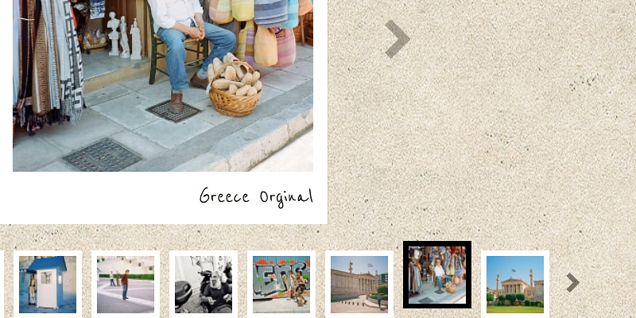
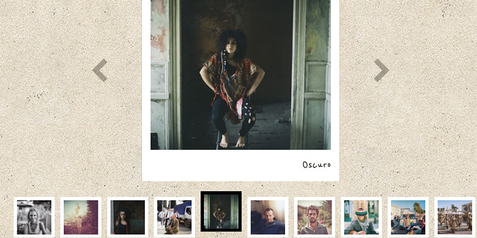

![sicanstudios logo]()
Brian JC Osborne
Brian is a photographer living in Cyprus. He wanted a professional, simple website to display his photographs in a Polaroid style. He already had a concept idea in mind and all I did was code it and bring it to life.
CMS Custom build
Tools used Photoshop, Notepad, HTML 5, PHP, CSS 3, jQuery
Visit Website
“I wanted a website designed my way, simple and captivating. Alex, understood my needs straight away and provided me with creative suggestions. He has a deep understanding of the web and the tools needed to build a professional website.” - Brian JC Osborne
Screenshot of the website
{kind=link}
CMS
The website was coded in HTML5 and CSS 3. The client specifically ordered that no CMS (WordPress, Joomla, etc.) should be used. This proved to be a challenge for me, because I wanted to make it easy for the client to update and maintain his website. The solution I came up with was this one:
Have a categories folder and inside it, the folders for each gallery. Inside those folders, the respective images would be uploaded via FTP. The thumbnail for each category that is displayed on the homepage, i.e. the cover, was a jpeg named category_thumb.jpg. That filename would be ignored when displaying the images of that folder in gallery mode.
Using PHP to scan the categories directory for the folders meant that it was very easy to create new categories. The client just had to create a new folder, give it a name and add a jpeg category_thumb.jpg inside it, for the cover.
Lastly, with the use of PHP, the images were sorted in LIFO order (Last-In-First-Out) so that the latest uploaded image is the first image that appears in the website’s gallery.
Technical stuff
The name of the image file (ex: chief_of_police.jpg) is the name that is displayed on the lower right of the Polaroid design. The format doesn’t matter. The name is automatically capitalised and spaced.

To make it even easier to update the website, the thumbnails and photographs are generated from one image and cached automatically using PHP. Aside from that, whether the photograph uploaded via FTP inside the folder is of the exact size, 315px × 315px, or 5200px × 2950px it doesn’t matter. The script takes the image and resizes it then displays it on the page. It’s basically a very convenient drag-and-drop system.
Moreover, some images uploaded might not have the correct square ratio for a Polaroid feel. The script takes the uploaded image and crops it in the centre making it a square.
The Polaroid border and duct-tape is added later with CSS3. No images were used, aside from the textured background, for the styling of the design.
Gallery page
You can browse the photos of the gallery with the mouse, by clicking on the arrows next to each photograph. You can also browse using your keyboard arrows. Even more, on touch devices, such as the iPhone or iPad, you can browse by swiping your finger left or right over the image. This functionality was implemented using the very useful Swipe.js plugin.

Keyboard shortcuts
Besides using the keyboard’s arrow keys for browsing the photos, a keyboard navigation was implemented. So, pressing <h> takes you “home”, <c> takes you to the “contact” page, <f> takes you to the “faces” gallery, and so on. A useful functionality for a website to include.
Accessibility
In matters of accessibility all images were added an alt tag, descriptive coding, a sitemap of the website, visual feedback (see next paragraph), and more. Obviously, the gallery page relies heavily on JavaScript in order to function properly. But if the user has JavaScript disabled, she can still browse the website and see the photos in the gallery. The large photos are all displayed in a single column.
Visual feedback when hovering over each link, button or thumbnail was implemented. When hovered, the link changes colour, the buttons change in opacity and the thumbnails move up. The selected thumbnail has a black border, instead of a white, so that the user knows which thumbnail they’re currently viewing.
I presented the client with a different layout for a responsive mobile theme but he didn’t like the small screen design, so the website is not responsive, thus having only one layout for all the devices.
In conclusion, though the website has a simple layout, this project proved challenging on the back-end side. In the end, I believe the solution I came up with for the gallery and updating the website is simple enough and makes it easy for the client to update it. As always, I learned a lot from this project that will prove useful in the future.